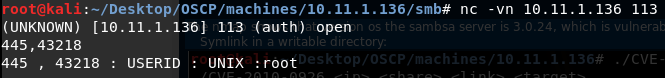

# Port 113 - ident
ident will identify what user a port is running as.
from SpeedGuide"Port 113 used for Identification/Authorization service. When a client program on your end contacts a remote server for services such as POP, IMAP, SMTP, IRC, FTP, etc. that remote server sends back a query to the IDENT port 113 asking for identification from your system."
## About ident
If a machine is running the service ident and samba (445) and you are connected to samba using the port 43218. You can get which user is running the samba service by doing:
If you just press enter when you conenct to the service, you'll get an error and be disconnected.
Other errors:
## Scripts
identi.pyhttps://github.com/brokensound77/identipyQuery select ports -
python identi.py 10.11.1.136 -q 22 113 139 445Qeury all -
python identi.py 10.11.1.136 -aident-user-enumBy pentest-monkey.
ident-user-enum 10.11.1.136 22 113 139 445 - Query ports 22,113,139,445
NmapNmap's -sC will identify the user of each running port
PORT STATE SERVICE VERSION
22/tcp open ssh OpenSSH 4.3p2 Debian 9 (protocol 2.0)
|_auth-owners: root
| ssh-hostkey:
| 1024 88:23:98:0d:9d:8a:20:59:35:b8:14:12:14:d5:d0:44 (DSA)
|_ 2048 6b:5d:04:71:76:78:56:96:56:92:a8:02:30:73:ee:fa (RSA)
113/tcp open ident
|_auth-owners: identd
139/tcp open netbios-ssn Samba smbd 3.X - 4.X (workgroup: LOCAL)
|_auth-owners: root
445/tcp open netbios-ssn Samba smbd 3.0.24 (workgroup: LOCAL)
|_auth-owners: root
## Config files
•
/etc/identd.conf•
/etc/identd.key